Jasa Kanopi Membrane untuk Rumah, Bisnis & Area Komersial
Solusi kanopi membrane custom untuk berbagai kebutuhan, dengan desain yang disesuaikan dengan kondisi dan fungsi area. Melayani pengerjaan presisi di Jabodetabek dan proyek di berbagai wilayah Indonesia.
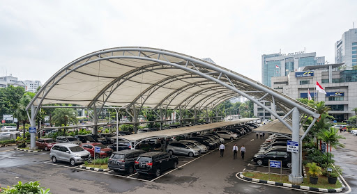
Konsep arsitektural disesuaikan dengan kebutuhan ruang, estetika bangunan, dan kondisi tapak lokasi Anda.
Solusi peneduh untuk carport hunian pribadi, cafe resto, drop-off komersial, hingga area parkir luas.
Didukung armada workshop terpusat di Jakarta Timur dengan kesiapan proyek ke berbagai provinsi di Indonesia.
Diskusikan dimensi awal, gambar denah, dan estimasi biaya langsung bersama tim teknis melalui WhatsApp.
Kanopi Membrane untuk Berbagai Kebutuhan
Aplikasi struktur kanopi tensile membrane arsitektural yang dirancang presisi sesuai peruntukan fungsi bangunan dan daya tahan iklim tropis.
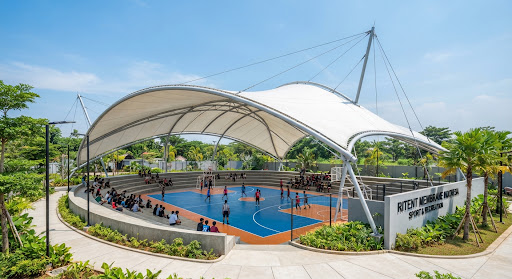
Kanopi Membrane Rumah
Naungan estetis untuk halaman depan, teras belakang, rooftop, dan balkon rumah modern dengan sirkulasi cahaya alami yang sejuk.
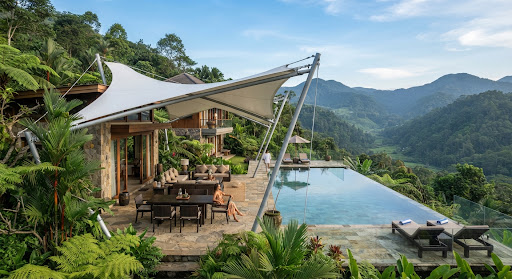
Carport Kendaraan
Perlindungan maksimal dari radiasi terik matahari dan hujan deras, dengan struktur bentang lebar tanpa tiang tengah yang mengganggu manuver kendaraan.
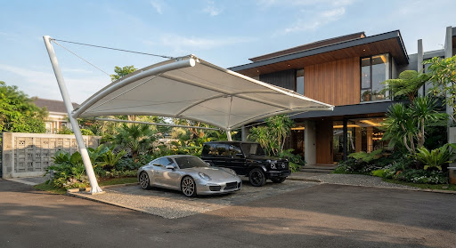
Cafe & Resto Outdoor
Desain ikonik bernilai arsitektur tinggi yang menciptakan ruang santai outdoor instagramable sekaligus menjaga kenyamanan pelanggan dari cuaca.
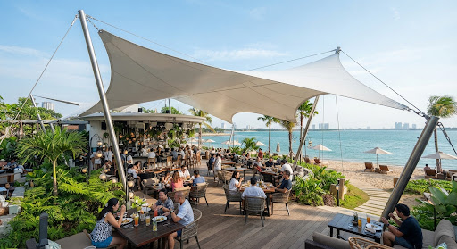
Area Komersial & Drop-off
Solusi peneduh untuk lobby ruko, entrance hotel, plaza pedestrian mall, dan pusat perkantoran dengan daya tarik visual megah dan profesional.
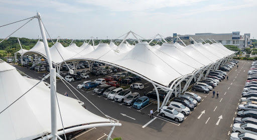
Parkiran Gedung & Kantor
Sistem kanopi membrane bentang modul panjang untuk menaungi puluhan deret kendaraan kantor, rumah sakit, maupun kawasan industri secara seragam.
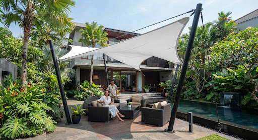
Lapangan & Area Publik
Penutup panggung terbuka, pedestrian walkway, lapangan olahraga tenis/basket, dan fasilitas rekreasi publik yang membutuhkan bentang tanpa kolom sentral.
Kenapa Memilih Ritent Membrane?
Komitmen kami adalah menghadirkan struktur kanopi membrane yang kokoh, rapi, dan fungsional tanpa janji berlebihan.
Desain Menyesuaikan Lokasi
Konsep dan geometri kanopi disesuaikan dengan kontur lahan, titik tumpu dinding gedung, serta alur jatuhnya air hujan di lokasi Anda.
Dibuat untuk Berbagai Kebutuhan
Fleksibilitas fabrikasi mencakup hunian residensial 1-2 mobil hingga kompleks komersial dan fasilitas institusi seluas ratusan meter persegi.
Konsultasi Kebutuhan Proyek
Diskusikan dimensi panjang x lebar, foto lokasi, dan preferensi bentuk sebelum Anda mengambil keputusan anggaran rancangan.
Pengerjaan yang Terstruktur
Alur kerja terdokumentasi rapi: konsultasi awal, pengukuran tapak, penawaran transparan, fabrikasi presisi bengkel, hingga perakitan di tempat.
Material Berkualitas & Teruji
Kain membran standar arsitektural (Heytex, Serge Ferrari, AGTex) dengan formula anti-jamur, tahan bara api, dan ketahanan cuaca tropis berumur panjang.
Workshop & Tim Fabrikasi Sendiri
Proses pengelasan pipa baja dan pemotongan high-frequency welding membrane dilakukan langsung di workshop kami di Pulo Gebang, Jakarta Timur.
Hasil Pekerjaan Kanopi Membrane
Ragam tipe instalasi struktur kanopi dan tenda membrane yang telah selesai kami kerjakan dengan ketelitian detail.
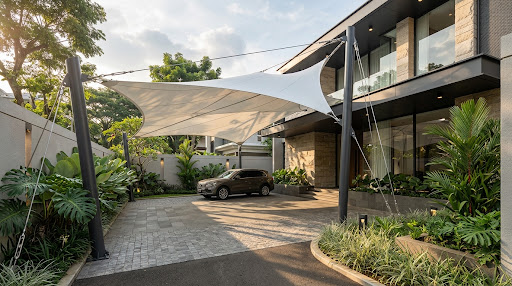
Hunian Modern Pondok Indah
Bentuk parabolic hypar dengan pipa tiang galvanis heavy-duty dan tarikan sling stainless, memayungi 2 unit mobil keluarga.
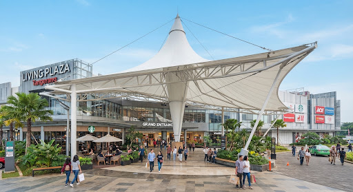
Alfresco Dining Canopy PIK 2
Tensile membrane multi-point sail shade yang memberikan keteduhan maksimal bagi pengunjung restoran di pesisir utara Jakarta.
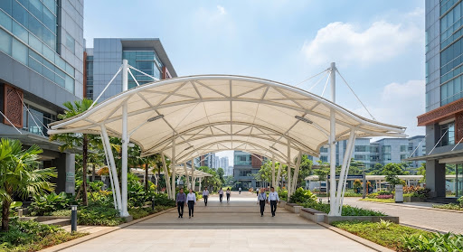
Drop-off Area Rukan Komersial
Struktur membrane cone model dengan tiang sentral tunggal untuk perlindungan area masuk lobi tanpa menghalangi lajur sirkulasi kendaraan.
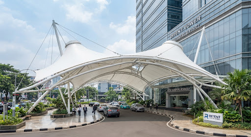
Gedung Kantor BUMN Sudirman
Instalasi atap kanopi membrane modular bentang 60 meter persegi untuk parkir mobil dinas dan operasional kantor.

Kanopi Teras Kolam Villa Tropis
Perpaduan tiang baja profil melengkung dengan kain membrane Serge Ferrari untuk ketahanan terhadap cuaca lembap dan hujan dataran tinggi.

Pedestrian Koridor Rumah Sakit
Kanopi koridor pejalan kaki tahan terpaan angin kencang yang menghubungkan gedung instalasi gawat darurat dengan area parkir ambulans.
Dirancang Sesuai Kebutuhan Area
Pahami elemen utama konstruksi kanopi membrane arsitektural kami yang memadukan kekuatan baja dan fleksibilitas tekstil.
Kain Membrane Tensile
Kain membran PVC/PVDF tahan cuaca panas terik dan hujan tropis lebat. Dilengkapi lapisan anti-jamur, anti-UV, dan self-cleaning coating.
Rangka Struktur Baja
Pipa besi galvanis tebal medium/heavy atau hollow pipa baja struktural. Dilapisi cat dasar epoxy anti-karat dan finishing polyurethane.
Aksesoris & Kabel Sling
Kabel sling baja stainless steel SS304/SS316, turnbuckle jarum keras, dan clamping plate laser cut untuk tegangan kain yang stabil dan kokoh.
Bentuk Geometris
Bentuk Hyperbolic Paraboloid (Hypar pelana kuda), Conical (kerucut payung), maupun Barrel Vault disesuaikan dengan arsitektur bangunan.
Instalasi Presisi
Pemasangan teliti oleh teknisi berpengalaman lapangan untuk memastikan tegangan kain optimal, tidak kendur, dan bebas genangan air saat hujan.
Proses Konsultasi & Pengerjaan
Alur kerja praktis dan terstruktur dari awal hingga kanopi siap digunakan tanpa proses yang membingungkan.
Konsultasi Awal
Hubungi kami via WhatsApp (085542226363). Diskusikan gambaran umum rencana kanopi membrane Anda.
Diskusi Kebutuhan
Bahas perkiraan lokasi, ukuran luas, peruntukan fungsi (carport/cafe/dsb), serta preferensi desain.
Survey / Ukur
Jika diperlukan, tim melakukan pengecekan kondisi tapak dan pengukuran fisik detail di lapangan.
Penawaran Resmi
Kebutuhan dihitung secara transparan dan kami berikan dokumen estimasi penawaran harga sesuai spesifikasi.
Fabrikasi & Pasang
Fabrikasi struktur di workshop, pengelasan, dan instalasi membrane di lokasi sesuai kesepakatan jadwal.
Melayani Jabodetabek & Berbagai Wilayah Indonesia
Jangkauan pengerjaan proyek kanopi membrane fleksibel untuk kebutuhan residensial lokal maupun fasilitas komersial luar kota.
Layanan survei dan pemasangan reguler mencakup Jakarta (Selatan, Barat, Timur, Utara, Pusat), Bogor, Depok, Tangerang, Tangsel, dan Bekasi.
Untuk kebutuhan di Jawa Barat, Jawa Tengah, Bali, Sumatra, Kalimantan, dan provinsi lain, hubungi Ritent untuk jadwal dan teknis logistik.
Jl. Raya Pulo Gebang No.186, RT.4/RW.4, Ujung Menteng, Kec. Cakung, Kota Jakarta Timur, DKI Jakarta 13960
Pertanyaan yang Sering Diajukan
Informasi dasar seputar kanopi membrane untuk membantu Anda memahami estimasi, material, dan prosedur kerja.
Punya Rencana Membuat Kanopi Membrane?
Kirim kebutuhan, lokasi atau foto area yang ingin dipasang. Konsultasikan kebutuhan proyek Anda bersama tim teknisi Ritent Membrane Indonesia secara langsung dan transparan.